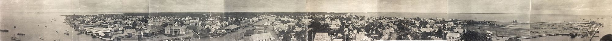

Explorando la belleza y diversidad de la región
Belice (en inglés: Belize) es un país soberano de América ubicado en el extremo noreste de América Central. Limita al norte con México y al sur y oeste con Guatemala, y el golfo de Honduras lo separa del país homónimo. La capital es la ciudad de Belmopán y la ciudad más poblada es la Ciudad de Belice, que sirvió como capital hasta el año 1970, cuando la destrucción causada por el huracán Hattie obligó al gobierno a transferir la capital a la entonces comunidad planeada de Belmopán, fundada en 1960. Es el único país de América Central cuya forma de gobierno está organizada en una monarquía constitucional parlamentaria, donde el Rey del Reino Unido ejerce como jefe de Estado y es representado en el país por un gobernador general. La cultura maya se extendió al territorio de Belice entre 1500 a. C. y 300 d. C. y floreció hasta aproximadamente el siglo XIII. El contacto europeo comenzó en 1492 cuando Cristóbal Colón navegó a lo largo del Golfo de Honduras.La exploración europea fue iniciada por colonos ingleses en 1638. Este período también estuvo marcado por un conflicto entre España y Gran Bretaña por el territorio hasta que Gran Bretaña derrotó a los españoles en la Batalla de Cayo San Jorge en 1798. Se convirtió en colonia británica en 1840, conocida como Honduras Británica. Obtuvo la independencia del Reino Unido el 21 de septiembre de 1981 y adquirió su actual nombre, por la ciudad de Belice, a su vez nombrada por el río Belice. Belice tiene un área de 22 900 km² y una población de 387 879 habitantes (2017). Tiene la menor población y densidad de toda América Central. El crecimiento poblacional anual era de 1.87 % en 2015, el segundo más alto de la región y de los más altos en todo el hemisferio oeste. Aunque los idiomas predominantes son el español y el criollo beliceño, Belice es el único país de América Central en donde el idioma oficial es el inglés, aunque solo el 62.9 % de la población lo habla como idioma secundario (3 % como lengua madre) comparado con el 56.6 % de la población que habla español, el 44.6 % que habla criollo beliceño y 10.5 % que habla maya. Belice comparte un pasado común no solo con los países de América Central, sino también con el Caribe. Forma parte de la Mancomunidad de Naciones, del Caricom y del Sistema de la Integración Centroamericana (SICA).
Belice fue parte del área cultural maya, que se extendía desde el sur de México hasta Guatemala y Honduras. La ocupación más temprana del territorio corresponde a la mitad del segundo milenio a. C., la cual tuvo cierto desarrollo en torno al siglo IX de nuestra era. El centro político y cultural más importante de la región era el sitio conocido en la actualidad como El Caracol, cuyas inscripciones se encuentran en aristocrática variante del maya, llamado Ch’olti’an Clásico por los epigrafistas. Al norte de las Montes Maya las inscripciones de Lamanai se encuentran en yucateco desde el siglo VII. En el periodo Clásico vivían en el actual territorio beliceño cerca de 400 000 personas y, si bien hubo un descenso de la población durante el Posclásico, las tierras bajas mayas seguían ocupadas cuando arribaron los europeos en el siglo XVI; para entonces los principales habitantes eran los mopanes, una rama de los yucatecos.
Los conquistadores españoles exploraron la región a partir de 1519, la incorporaron a la Corona de Castilla y el territorio pasó a ser parte de la capitanía General de Guatemala, si bien optaron por no colonizarla debido a la falta de recursos como el oro y la fuerte defensa de la península de Yucatán por los mayas. En el siglo XVII, marinos ingleses navegaron por la zona dedicándose a la piratería y a la tala del palo de Campeche para la producción de tinte. El tratado de Madrid de 1670 puso fin a los ataques piratas, con lo que los ingleses se concentraron en cortar palo de Campeche. Con la madera se producía un agente de fijación para los tintes de ropa que era vital para la industria lanar europea. España otorgó licencia de ocupar el área a los colonos británicos a condición de que cesaran los actos de piratería. En 1716 unos taladores británicos expulsados por los españoles de la bahía de Campeche se instalaron en la región del río Belice. A lo largo del siglo XVIII españoles y británicos intercambiaron ataques cada vez que se declaraba la guerra entre las dos potencias. Un ejemplo es la batalla del Cayo San Jorge, del 10 de septiembre de 1798. El aniversario de esta batalla ha sido declarado fiesta nacional de Belice. Los británicos esperaron hasta el año 1789 para nombrar el primer superintendente del territorio de Belice. Anteriormente, el gobierno británico no reconoció el asentamiento de Belice como una colonia, por temor a provocar un ataque español ya que el territorio pertenecía formalmente a España. La falta de implicación del gobierno británico permitió a los colonos el establecimiento de sus propias leyes y formas de gobierno. Durante este tiempo unos pocos colonos ricos ganaron el control de la legislatura local, conocida como Public Meeting («Reunión Pública»), así como de la mayor parte de las tierras y madera.
El dominio nominal de España sobre Belice terminó con las guerras de independencia hispanoamericanas, a principios del siglo XIX. En 1825, el nuevo estado de México fue reconocido oficialmente por los británicos y el año siguiente renunció a toda pretensión sobre Belice mientras la República Federal de Centro América negociaba términos similares. En el siglo XIX, los británicos ejercieron un mayor control sobre los colonos, amenazando con la suspensión del Public Meeting a menos que se observaran las instrucciones del gobierno con respecto a la abolición de la esclavitud. Aunque la esclavitud fue abolida en 1838 en el Imperio británico, las condiciones de trabajo de los trabajadores en la colonia de Belice eran denigrantes. Los esclavos de la colonia eran valorados por sus habilidades en la extracción de caoba. Como resultado, los antiguos dueños de esclavos en la Honduras británica ganaban 53,69 £ de promedio por esclavo, el monto más alto pagado en cualquier parte del Imperio británico. Poco después, se pusieron en marcha una serie de instituciones para garantizar la presencia continua de una fuerza de trabajo viable. Algunas de ellas limitaron la capacidad de las personas para obtener tierra, mediante un sistema de peonaje por deudas que permitió mantener a los antiguos esclavos «liberados» como fuerza de trabajo. Debido a que una pequeña élite controlaba la tierra y el comercio de la colonia, los antiguos esclavos no tenían otro remedio que seguir trabajando como leñadores. En 1836 los británicos reclamaron el derecho de administrar el territorio de Belice, pero las Provincias Unidas de América Central se negaron. Como consecuencia, los británicos pactaron con México la explotación de madera y tintes. Los británicos, por consiguiente, comenzaron a invadir el territorio de Guatemala, con la excusa de que tenían derechos sobre este. Sin embargo, los británicos habían acordado con los españoles explotar recursos hasta el río Sibum, pero con el paso del tiempo, fueron tomando más territorio hasta llegar cerca de Izabal (departamento de Guatemala) y en 1862, el Reino Unido lo declaró formalmente como una colonia de la Corona británica, subordinada a Jamaica, bautizada con el nombre de Honduras Británica (en inglés: British Honduras). Como colonia, Belice comenzó a atraer a inversores británicos. Entre las empresas británicas que dominaron la colonia en el siglo XIX se encuentra la Belize Estate and Produce Company, que logró adquirir la mitad de todas las tierras de propiedad privada del territorio. La gran influencia de esta compañía privada se explica en parte por la dependencia de la colonia del comercio de caoba durante el resto del siglo XIX y la primera mitad del siglo XX.
 Vista panorámica de la ciudad de Belice, c. 1914.La Gran Depresión de 1930 provocó un colapso casi total de la economía colonial, ya que la demanda británica de madera se desplomó. Los efectos del desempleo generalizado se agravaron por un huracán devastador que afectó a la colonia en 1931. Los esfuerzos de rescate y reconstrucción del gobierno fueron percibidos como inadecuados, una situación que agravó tras su negativa ante las llamadas populares de legalizar los sindicatos e introducir un salario mínimo. Las manifestaciones y los disturbios de 1934 marcaron el comienzo de un movimiento nacionalista a favor de la independencia. En respuesta, el gobierno revocó las sanciones penales contra los trabajadores que violaron los términos de sus contratos de trabajo por haberse afiliado a sindicatos, y concedió a estos el derecho de afiliación a los mismos. Las condiciones económicas mejoraron durante la Segunda Guerra Mundial (1939-1945), cuando muchos hombres de Belice ingresaron en las fuerzas armadas o contribuyeron como fuerza laboral al esfuerzo bélico. Después de la guerra, la economía de la colonia se estancó nuevamente debido a las presiones causadas por los efectos perjudiciales de la guerra. La decisión británica de devaluar el dólar de la Honduras británica en 1949 empeoró las condiciones económicas y condujo a la creación del Comité del Pueblo, que exigía la independencia. El sucesor del Comité del Pueblo, el Partido Unido del Pueblo (PUP), solicitó reformas constitucionales y la ampliación de los derechos de voto a todos los adultos.
Las reformas constitucionales se iniciaron en 1954 y dieron lugar a una nueva Constitución diez años más tarde. Reino Unido concedió a la Honduras Británica el autogobierno en 1964, y el líder del PUP, George Price, fue nombrado primer ministro de la colonia. La Honduras Británica fue rebautizada oficialmente como «Belize» en 1973. El progreso hacia la independencia, sin embargo, se vio obstaculizado por una reclamación guatemalteca de soberanía del territorio. Belice, finalmente, alcanzó la plena independencia el 21 de septiembre de 1981, aunque Guatemala se negó a reconocer a la nueva nación. Unos 1500 soldados británicos se quedaron para proteger Belice de la amenaza guatemalteca. Con Price a la cabeza, el PUP ganó todas las elecciones hasta 1984. Ese año el PUP fue derrotado por el Partido Democrático Unido (UDP) (United Democratic Party), y el líder del UDP, Manuel Esquivel, reemplazó a Price como primer ministro beliceño. Price regresó al poder tras las elecciones de 1989. El presidente de Guatemala reconoció formalmente la independencia de Belice en 1992. Al año siguiente, el Reino Unido anunció que pondría fin a su participación militar en Belice. Los soldados británicos se retiraron en 1994, pero el Reino Unido dejó una unidad de entrenamiento militar para ayudar a la recién creada Fuerza de Defensa de Belice. El UDP recuperó el poder en las elecciones de 1993 nacional, y Esquivel fue nombrado primer ministro por segunda vez. Poco después, Esquivel anunció la suspensión de un pacto alcanzado con Guatemala durante el mandato de Price. El pacto redujo la disputa fronteriza de 130 años de edad entre los dos países. Las tensiones fronterizas continuaron en la década del 2000, aunque los dos países cooperaron en otras áreas. El PUP obtuvo una victoria aplastante en las elecciones nacionales de 1998, y líder del PUP, Said Musa, prestó juramento como primer ministro. En las elecciones de 2003 el PUP (People’s United Party) mantuvo su mayoría, y Musa continuó como primer ministro. Se comprometió a mejorar las condiciones en el sur subdesarrollado y en gran parte inaccesible de Belice. En 2005, Belice fue escenario de disturbios causados por el descontento con el gobierno del People’s United Party (PUP), que aumentó los impuestos. El 8 de febrero de 2008, Dean Barrow prestó juramento como primer ministro después de que el UDP obtuviera una aplastante victoria en las elecciones generales. Tras 12 años de gobierno de Barrow, en 2020 el PUP regresó al poder bajo el liderazgo de Johnny Briceño.
Sumérgete en la cultura vibrante y diversa de Centroamérica, desde tradiciones hasta gastronomía.
Belice está situada en la costa caribeña del norte de Centroamérica. Comparte frontera al norte con el estado mexicano de Quintana Roo, al oeste con el departamento guatemalteco de Petén, y al sur con el río Sibún. Al este del mar Caribe se encuentra la segunda barrera de arrecifes más larga del mundo. El área total del país es 22 966 km²,sin embargo el territorio real de Belice es de apenas 4323.964 km², siendo el resto unos 12 272 km² en litigio con Guatemala, hasta que dicho litigio sea llevado a la Corte Internacional de Justicia. Belice tiene forma de un rectángulo que se extiende alrededor de 100 km norte-sur y sobre 95 km de este a oeste. Su longitud total de frontera terrestre de 542 km. Los cursos ondulantes de dos ríos, el Hondo y el Sibún, definen gran parte del curso de las fronteras norte y sur del país. La frontera occidental sigue sin características naturales y corre de norte a sur a través de bosques de tierras bajas y tierras altas de meseta. El norte de Belice consiste principalmente de llanuras costeras planas y pantanosas, densamente forestadas. La flora es muy diversa teniendo en cuenta el espacio tan reducido. En el sur, se encuentra la baja sierra de las Montañas Maya. El punto más alto de Belice es Doyle Delight con 1124 metros (3688 pies). La costa caribeña está bordeada de arrecifes de coral y unos 450 islotes e islas conocidas localmente como Cayos («cayes»). Tres de los cuatro arrecifes de coral del Hemisferio Occidental se encuentran frente a las costas de Belice. La accidentada geografía de Belice también ha hecho que la costa y la selva sean atractivas para los narcotraficantes, que utilizan el país como puerta de entrada de estupefacientes a México. En el 2011, los Estados Unidos agregaron a Belice a la lista de naciones consideradas como los mayores productores de droga o países de tránsito para narcóticos.
Si tienes preguntas o comentarios, no dudes en ponerte en contacto con nosotros.
Si tienes preguntas o comentarios, no dudes en ponerte en contacto con nosotros.